挖掘需求的方法（下）
日期：2024-08-01
第六种，挖掘需求关键词的方法。
今天跟大家聊聊一些目前正在赚钱的 AI 产品。 主要分成三部分：
- 分享彪哥发现的通过看排行榜挖掘赚钱产品的方法
- 从排行榜里找一些产品，分析流量来源，估算月收入
- 总结下目前还能够获取到流量的一些渠道
第一部分，如何找到这些目前正在赚钱的 AI 产品。
如果是网站产品，可以看 Toolify.ai 的收入排行榜或者 IndieHackers.com 的收入排行榜。如果是 APP 产品可以看 SensorTower.com、DianDian.com、QiMai.cn、Data.ai 等产品。不过我对 APP 不是特别熟悉，所以我们今天只讲 web 形态的产品。
我们先看下 Toolify.ai 收入排行榜的截图： https://www.toolify.ai/Best-AI-Tools-revenue
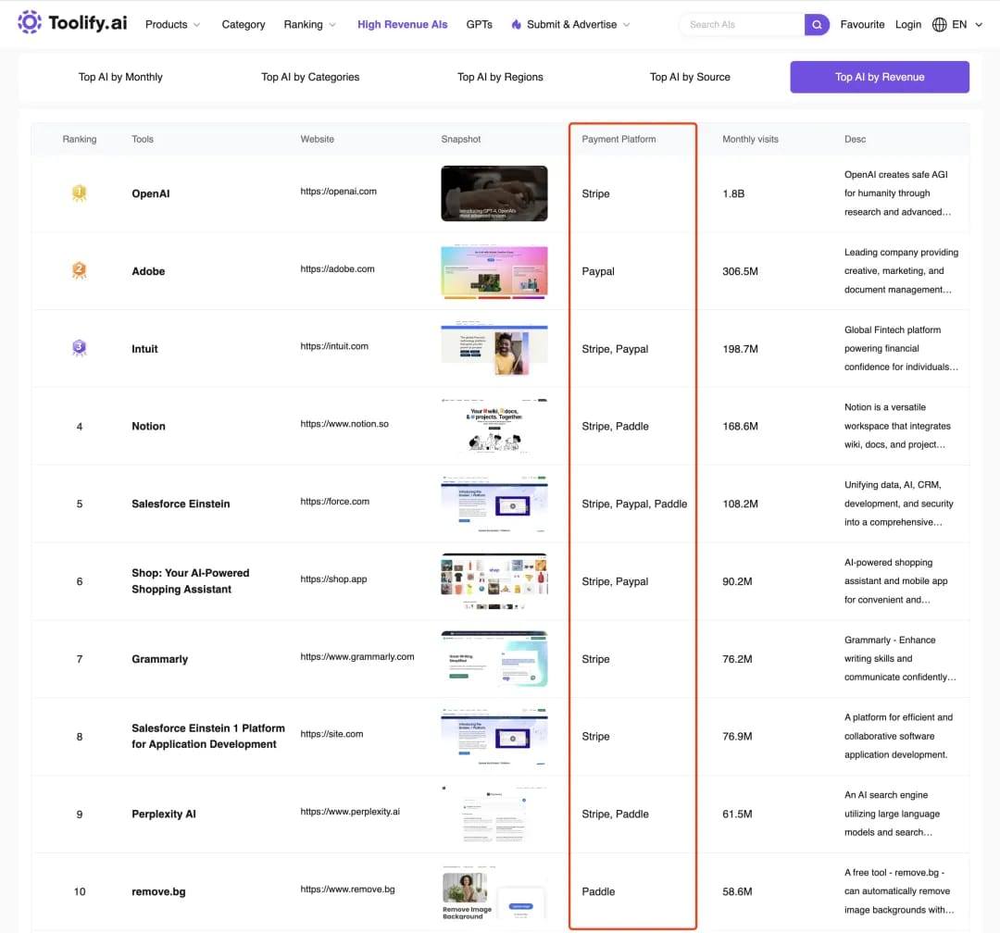
注意这里虽然第一眼看起来是按照流量排序的，好像跟收入没关系，但其实只是因为一般来讲流量越大收入越高，所以前面一些产品刚好流量排名和收入排名重合了。看第 7 名和第 8 名就知道，这个榜单不是流量排行榜。
那么这个榜单的收入是怎么来的呢？ 很简单，凭经验估算的。但也不是瞎估算，而是要有参考依据的。
参考依据是什么呢？就是上面截图中哥飞用红色圈出来的，基于收款平台的数据。先说下原理，当一个网站，接入了 stripe 支付后，用户想要付费，就会从这个网站点击打开 stripe 的收银台页面，进行支付。
我们拿 ChatGPT 网站升级 plus 套餐为例。
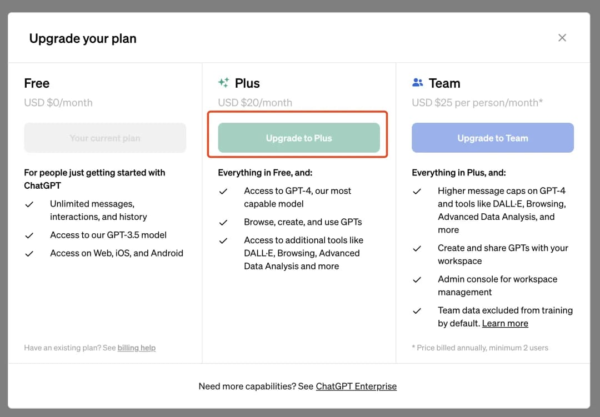
当我们点击“Upgrade to Plus”按钮后，会打开下面的页面：
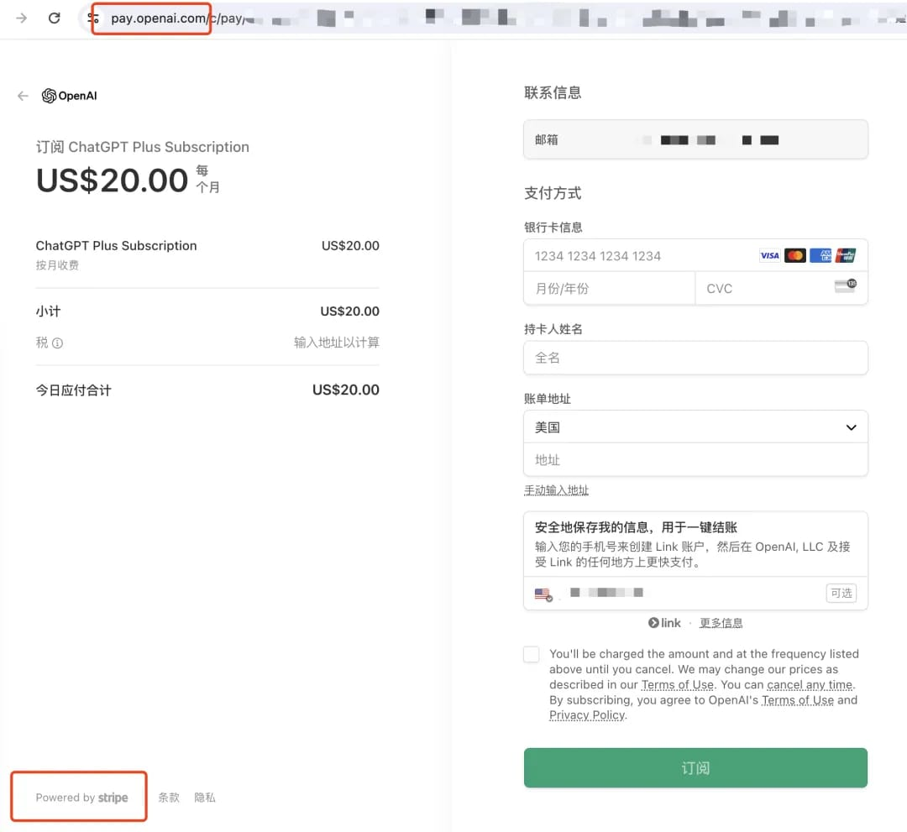
可以看到，虽然打开的网站域名是 pay.openai.com，但从左下角的“Powered by Stripe” 可以知道，这其实是 Stripe 的页面。
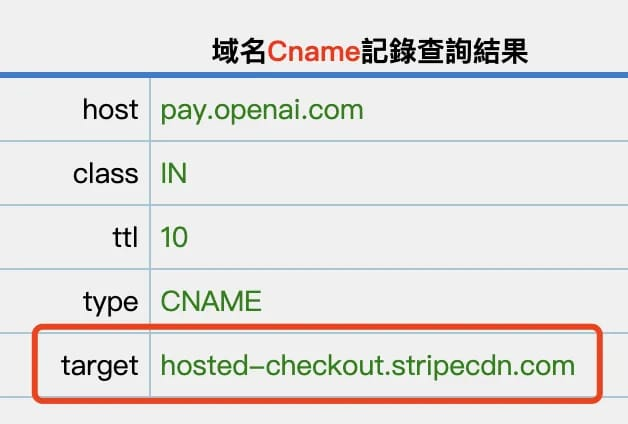
会显示为 pay.openai.com 是因为 OpenAI 在 Stripe 后台绑定了自定义域名。那么根据 pay.openai.com 这个域名的访问量，就可以算出 ChatGPT 的订单数量。
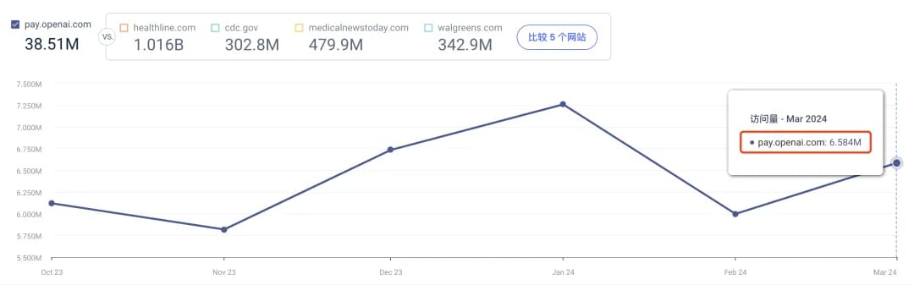
在 Similarweb 可以查到这个域名的 3 月访问量是 658 万，其中有 450 万来自于外部链接。
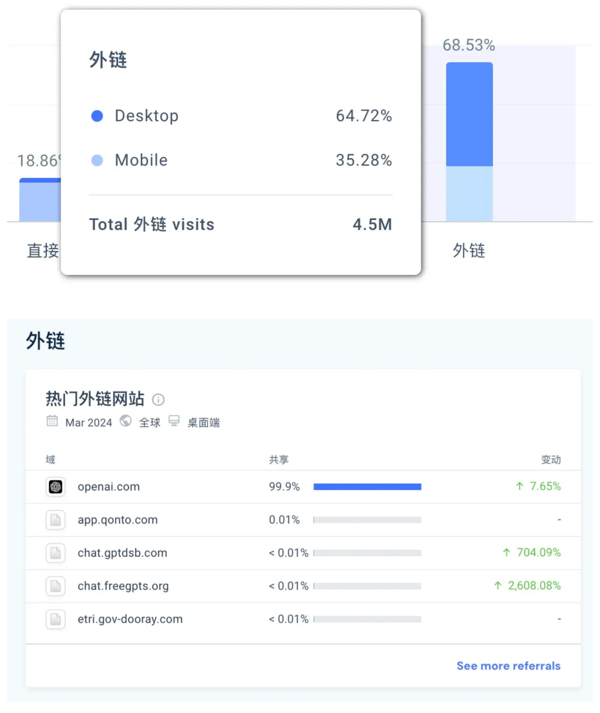
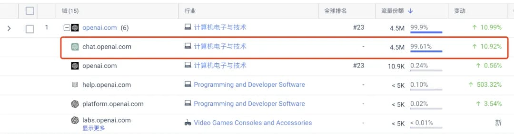
而外部链接里 99.9% 流量都来自于 chat.openai.com，所以我们就可以假设收银台页面在 3 月总共被打开了 450 万次，我们假设打开一次就是一个订单，也就是 450 万个订单。
这里我再解释下，一般打开了 Stripe 的收银台页面，就是已经创建好订单了。用户打开这个订单后，有可能不输入任何信息，直接关闭，也有可能会输入信用卡信息，确认支付。这里就有两种结果，支付成功或者失败，失败的原因有可能有多种，如被限制了、卡余额不足、卡信息填错等等。
也就是说订单数量不等同于支付成功数量，这里有一个转换比例，我自己的 AI 工具类产品，支付成功比例从 10%到 50%都有。
我们假设 ChatGPT 订单支付成功率是 20%，也就是 90 万个订单，每个支付 20 美元，那么总营收就是 1800 万美元。
ChatGPT 的实际支付成功率估计不止 20%，具体多少，哥飞也不知道。
但我们掌握了这个方法，至少可以大概判断一个产品的月收入是多少。
有些产品没有在 Stripe 设置自定义域名，我们就没办法直接看收银台域名的流量来判断收入了。
这时候其实也有办法的，观察会发现，点击支付后打开的 Stripe 收银台地址是 checkout.stripe.com，那我们就可以去看checkout.stripe.com的流量。
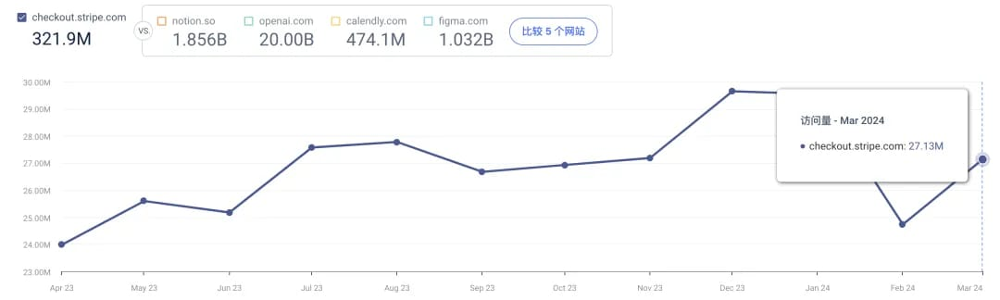
可以看到这个域名每个月的访问量在两三千万，也就是说，所有接入了 Stripe 支付但没有设置自定义域名的网站，一共每个月有两三千万个订单。
那要怎么分出来，每一个网站的订单数量呢？
刚才我们说明，在接入了 Stripe 支付的网站点击就会打开 Stripe 的收银台页面，这个时候，【接入了 Stripe 支付的网站】就是【Stripe 收银台网站】的【外部链接网站】，所以就可以在 Similarweb 的热门外链网站模块看到每一个网站的数据。
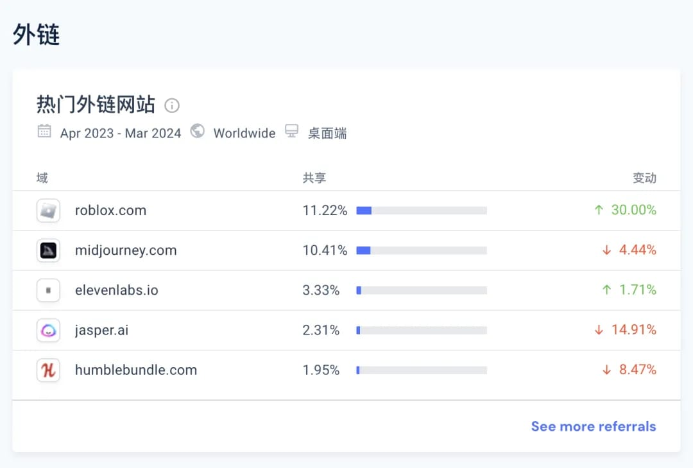
点击右下角链接，打开新页面，我们就得到了单点排行榜。
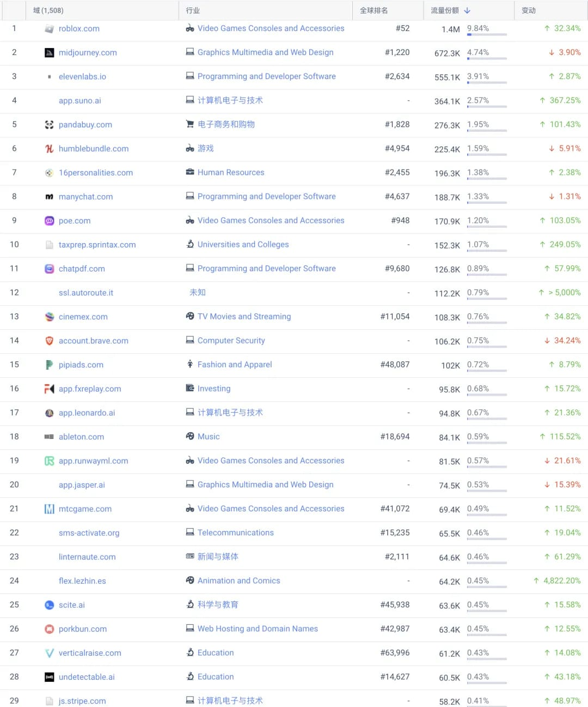
举例，上面是 3 月份的订单数量排行榜，排名第一的是 roblox.com，是一个套了元宇宙概念的类 4399 网站，上面有很多各种各样的小游戏，3 月的网站访问量是 6.669 亿，其中订单量是 140 万，具体支付成功率哥飞没去估算，反正也不是 AI 产品，我们就跳过。
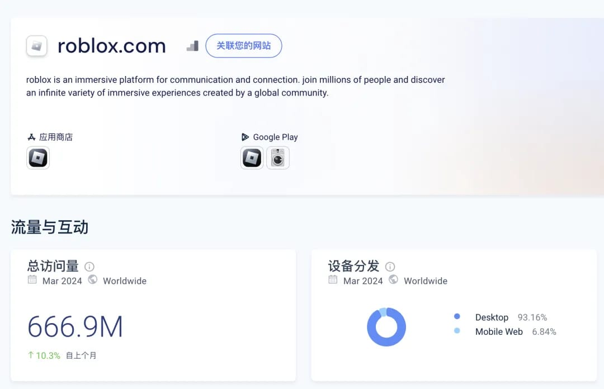
再看第二个产品 Midjourney 就是典型的 AI 产品了，3 月份订单数量约为 67 万个。
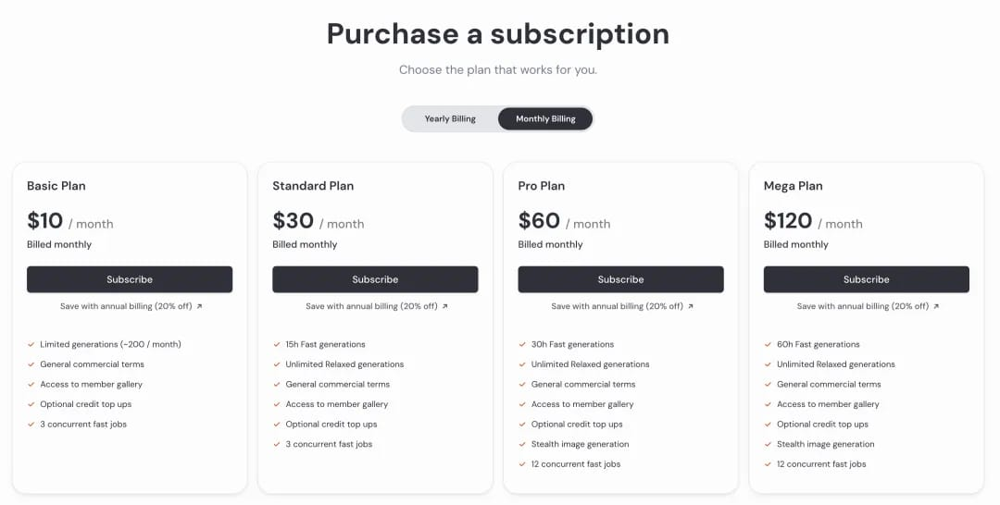
Midjourney 提供这么多套餐，我们假设平均每个订单 25 美元，假设支付成功率是 40%，那么算下来月收入是 67x25x0.4=670 万美元。
而实际上 Midjourney 属于订阅制，用户订阅后如果不是主动取消，下个月还好自动扣款，所以这 670 万可以理解为新增收入，而每个月还有老用户的订阅收入，所以总收入肯定是不止我们计算的这些。
查看科技媒体报告，说 Midjourney2023 年收入是 2 亿美元，算下来平均每个月是 1666 万美元。
从这里我们可以看��到，对于这种超级大的产品，我们其实并没有那么容易去估算真实的月收入。但是，其实很多时候我们也不需要知道真实的收入，只要知道订单数量，就能够判断出来，某一个 AI 产品到底有没有收入，进而去判断这个产品对应的需求大概有多大，我们是否值得进入这个市场。
那么是不是就完全无法知道一个 AI 产品的月收入到底是多少呢？
也不是。有一些开发者奉行 Build in Public 原则，会每个月公布自己产品的月收入，这也是他们宣传产品的一种方式。
通过去 Twitter 关注这些开发者，就能够知道真实收入。
甚至还可以去 Similarweb 看他的网站的流量情况，这样就能够倒推支付成功率等信息。
另外 IndieHackers 网站，也有一个收入排行榜，数据都是真实的，来自于开发者授权 IndieHackers 网站读取的 Stripe 真实收入。 https://www.indiehackers.com/products?category=ai&revenueVerification=stripe&sorting=highest-revenue
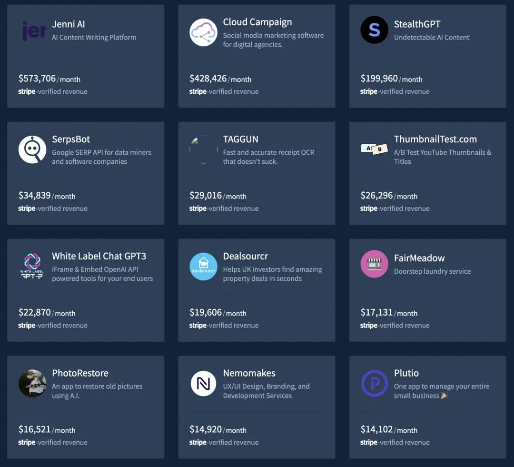
总结一下，我们可以通过 Toolify 和 IndieHackers 的排行榜直接看目前正在赚钱的 AI 产品，也可以通过在 Similarweb 看 Stripe 收银台的流量数据来估算其他一些 AI 产品的收入。 https://www.toolify.ai/Best-AI-Tools-revenue https://www.indiehackers.com/products?category=ai&revenueVerification=stripe&sorting=highest-revenue
下面我们开始第二部分，找几个产品来实际具体分析一下。
先看 Jenni AI，这是一个 AI 写作类产品，更准确地说是帮你写论文，写文献综述等各种各样内容的 AI 产品。
论文写作，这个是用户付费意愿比较强的需求。从流量角度，过去一年流量没有特别大的变化，一直在 100 多万徘徊。
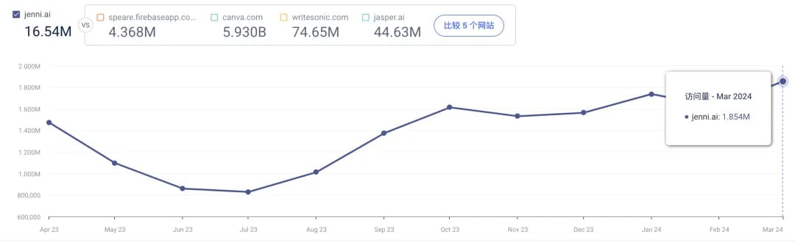
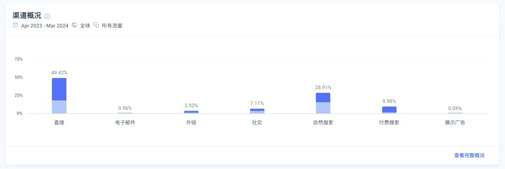
28.9%流量来自于自然搜索，也就是通过 SEO，从各个搜索引擎免费获取的流量。 10%流量来自于付费广告，7.1%来自于社交媒体分享，3.9%来自于外部链接，剩下还有 49.4%来自于直接访问，说明这个网站的留存不错。
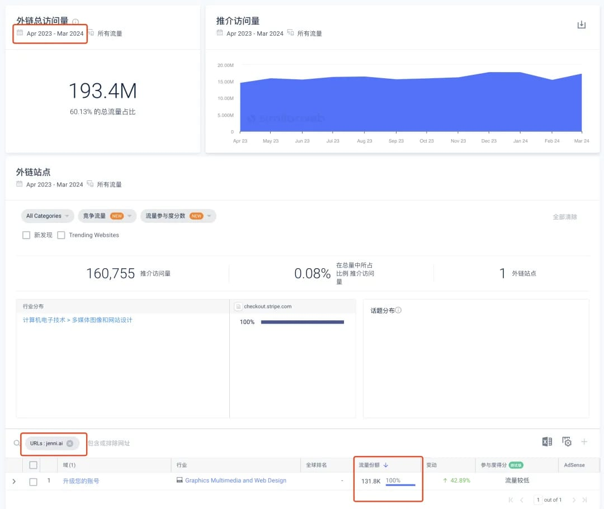
按照刚才介绍的方法，我们可以看到，最近 12 个月，Jenni AI 跳转到 Stripe 的访问量是 13.18 万，也就是过去 12 个月产生了这么多订单。
因为 IndieHackers 上显示的是 Mrr，也就是月度经常性收入，所以我们先看下 3 月的新增订单数量是 3.73 万，假设支付成功率是 10%，那么就有 3730 个成功支付订单。
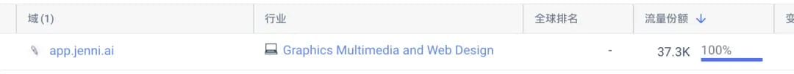
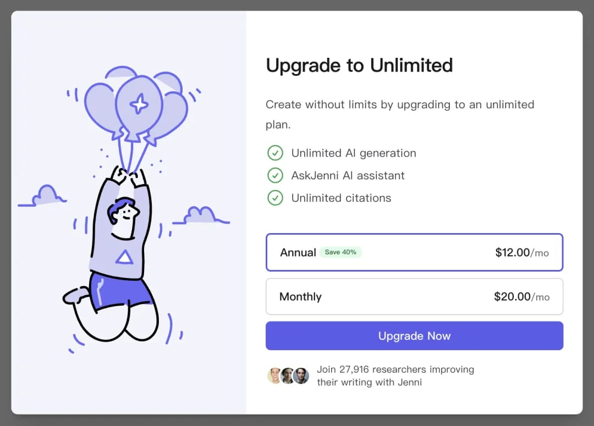
再看下 Jenni AI 的套餐是单月 20 美元，如果一次性支付 12 个月，就能优惠 40%，只需要 12 美元一个月，算下来就是要支付 144 美元。这里我们假设全部人都选择了年�付套餐，那么新增收入就是 3730x144=537K。
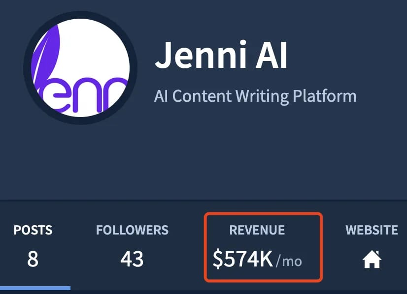
而 IndieHackers 上面显示的收入是 574K，看起来猜对了。
但其实是错的，因为不可能所有人都选择年付，也就是有一部分人会选择 20 美元，这里假设 60%选择年付，40%选择月付。
那么算下来，收入就是 3730x(144x0.6 + 20x0.4) = 352K。
还差 574K - 352K = 222K，可以理解是之前用户订阅后的自动付款。
那么上面这几个数字就算对了吗？
其实我们也是用了大量假设，先假设付费成功率是 10%，再假设有 60%选择年付，40%选择月付，这么多假设凑出来的数字当然不可能反应真实情况。
实际情况如何，就需要用上各种办法去调查，尽可能少假设，多用真实数据。但我们今天只是跟大家分享这个方法，所以就大胆假设了。
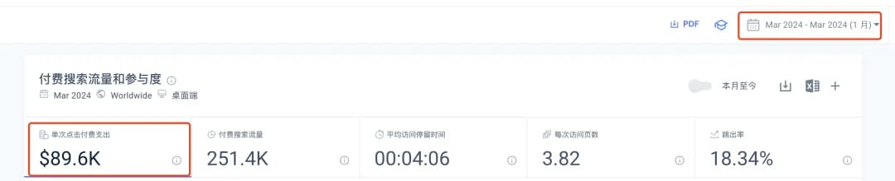
好了，我们再去看看广告收入，基于 Similarweb 估算的数据，3 月 Jenni AI 的搜索广告投入是 9 万美元左右。
这相比于每个月有 57 万美元收入来说，ROI 就很高了。
刚才上面说过，这主要是得益于有 28.9%的来自于搜索引擎的流量。
这部分流量完全不花钱，只要做好了 SEO 就能够得到，可以理解是谷歌的馈赠。
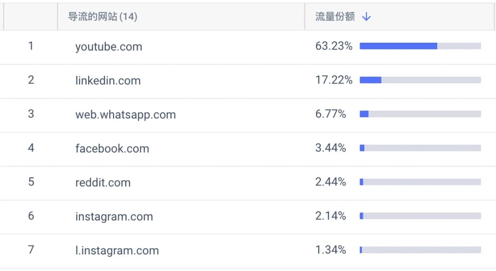
Jenni AI 还有 7.1%流量来自于社交媒体，主要来自于 YouTube 视频，排名第二的是 LinkedIn，WhatAPP 也来了不少流量。
所以我们的 AI 产品，如果做好用户引导，让用户能够主动分享到社交平台上，也是能够获得不错的流量和关注度的。
我们再来看一个产品 StealthGPT，这是一个生成“Undetectable AI Content”的 AI 工具，也就是说它生成出来的内容不太容易被 AI 检测工具检测出来。
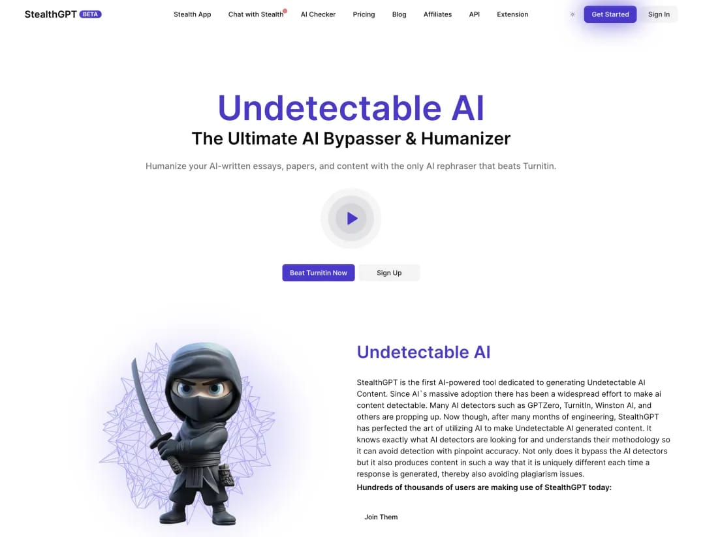
在 IndieHackers 上公布出来的，被验证的收入是 201K 美元。
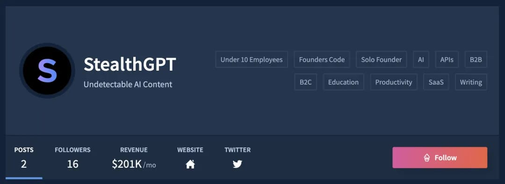
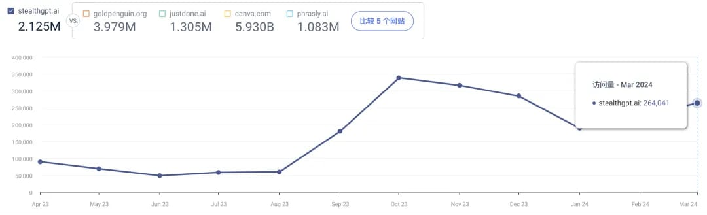
而这个网站的访问量目前才 26.4 万每个月，即使最高峰也才 33.8 万。这么一点流量，居然能够产生这么高的收入，这就是目前 AI 出海产品的魅力。
差不多相当于每一个访问量可以产生 20.1/26.4=0.76美元的收入。
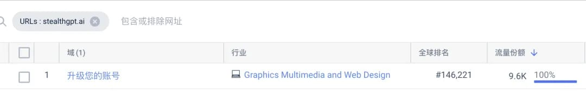 查看导入到 Stripe 的订单大概是 9.6K 个，这里我们忽略支付成功率，假设成功率就是 100%，计算一下每个订单的金额大概是 20.9 美元。
这个领域，目前流量更大的是另一个产品，谷歌搜索“Undetectable AI”可以找到，排名第一的就是。
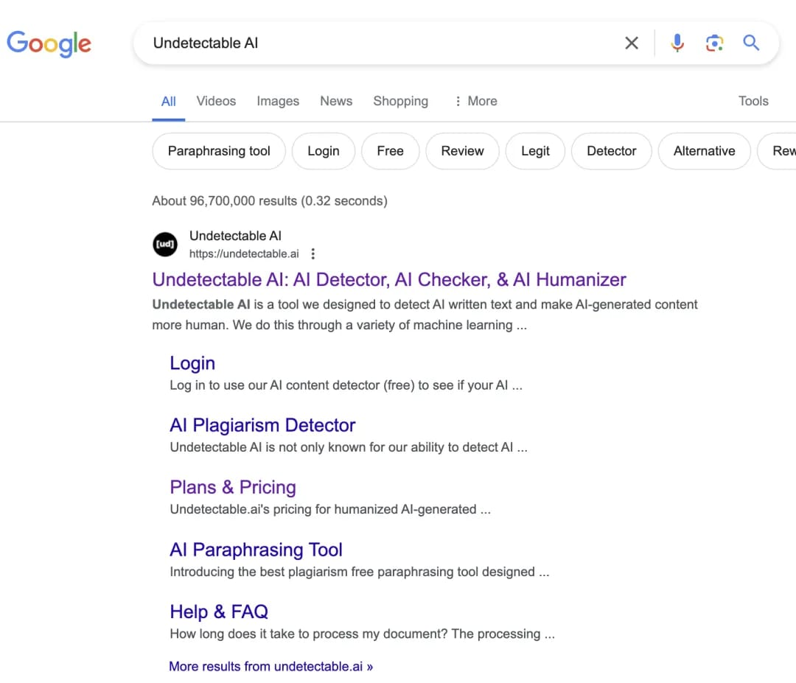
可以看到 Undetectable AI 直接用需求关键词注册域名，这样就把行业需求词变成了自己的品牌名称，在谷歌眼里，就相当于大家搜索 Undetectable AI 需求，想找的是 Undetectable AI 这个网站。这是很牛逼的一个策略。

这个网站 3 月的访问量是 416.9 万，假设这是同一批潜在用户，那么按照每一个访问量 0.76 美元计算，这个网站的月收入是 316 万美元。不过实际肯定是没有那么多的。
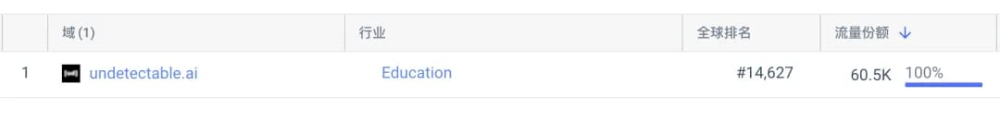
我们查到这个网站 3 月份导入到 Stripe 的订单大概是 60.5K。 同样按照 100%支付成功率计算，得到的金额是 60.5x1000x20.9=126 万美元。我们去 126 万到 316 万的中间数，所以大概估算这个网站每个月的收入是 220 万美元。再次说明一下，以上估算我们用到了大量的拍脑袋想的经验值，不保证准确率。
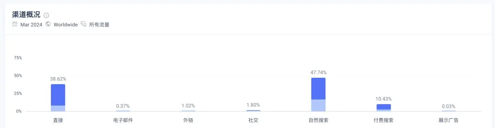
Undetectable AI 每一月的流量里有 47.74%来自于搜索引擎，这也是完全免费的流量，也就是几乎差不多有 100 万美元的收入来自于免费流量。
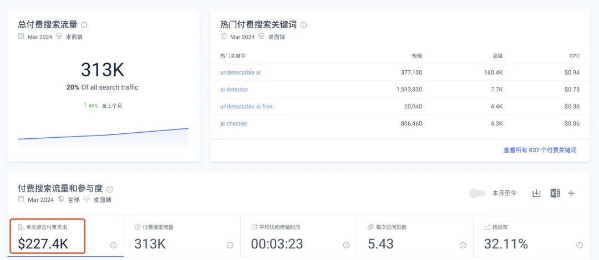
3 月花出去的广告费是 22.7 万美元，敢话这么多钱出去，说明肯定是赚钱的，ROI 能够打正的。有 10.43%的流量来自于付费搜索，也即是大约能够产生 22.9 万美元收入。
这样算起来，ROI 才刚刚打正，为什么他还愿意花这么多钱去打广告呢？
从上面的付费关键词可以看到，核心关键词“Undetectable AI”上就花了 16 万的广告费，说明他需要靠着付费广告来把这个词的精准流量都拿下，之后再用这些量来拿到自然搜索的排名。
好了，以上就是第二部分，我们找了几个产品分析了一下。列表里还有上百个产品，大家都可以按照这样的方式去分析。
下面我们讲��第三部分，目前还有效的流量获取渠道。
目前海外获取流量，主要有以下几种方式：
1、SEO + SEM
免费 + 付费组合，尽可能拿下所有的精准流量，而且付费流量还可以进一步巩固免费流量的位置。
2、Affiliate
也就是通过真金白银的返佣机制，让很多中小流量渠道帮助我们推广。
3、导航站
目前全球有 300+ 个 AI 导航站，大部分是不需要花钱就能提交，或者他们会自动收录，但还有很多有流量的 AI 导航站需要花钱才能提交，不过一般化的钱也不多，目前最贵的是全球排名第一的 AI 导航站 theresanaiforthat.com ，单次提交费需要 300 多美元。 而全球排名第二的 AI 导航站是杉木哥的 Toolify.ai，目前提交只需要 49 美元，价格很便宜了。 另外有些 AI 导航站还会去注册 Affiliate，也就是所有从导航过来的付费用户，他们都要收佣金。
4、Reddit
Reddit 类似于贴吧，有很多各种不同的频道，有些频道支持我们发布自己的产品的宣传帖子。 老外比较喜欢分享创业故事、产品故事的帖子，所以可以软一点，千万不要扔下一个链接就跑，那样太硬了，很容易被删帖。
5、YC Hacker News
Hacker News 上有一个 Show HN 频道，允许全球开发者发布自己的产品，可以直接留链接，然后写产品介绍。 同样更建议软一点，讲故事的形式，这样可以引起讨论，获得更多曝光。
6、ProductHunt
这上面每天都有很多产品在打榜，我们中小团队，没什么特色的产品，其实也是可以发布，不为别的，能够拿到一个外链也是不错的。
而如果你的产品有特色，能够吸引用户自发参与讨论，帮你投票，你再辅助一些付费投票，拿下前三名的话，可以带来很多二次传播。
7、红人营销
找到 Tik Tok、Instagram、YouTube 等平台上有一定粉丝的红人，请他们体验我们的产品后，制作一个视频发布到他们的账号上，也是可以带来不错热度和流量的
8、社交媒体
Twitter、Facebook 等传统社交媒体上面依然有挺大的流量，值得我们去挖掘，也可以找到一些达人帮我们发帖宣传。